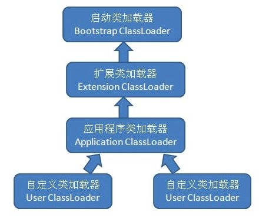

<!DOCTYPE html>
<html lang="en">
<head><meta name="generator" content="Hexo 3.8.0">
    <meta charset="utf-8">
    
    <title>
        类加载器 |
        
        YingLong</title>
    
    
        <meta name="keywords" content="JVM">
    
    <meta name="viewport" content="width=device-width, initial-scale=1, maximum-scale=1">
    <meta name="description" content="把类加载阶段中通过类的全限定名来获取描述此类的二进制字节流的动作放到Java虚拟机外部去实现，以便让程序自己决定如何去获取所需的类，实现该动作的代码模块称为类加载器。 类加载器是Java技术体系的重要基石，是Java语言的一项创新，也是Java语言流行的重要原因之一，最初是为了满足Java Applet需求而开发的，但目前Java Applet基本上已经死掉，但类加载器却在类层次划分、OSGi、热">
<meta name="keywords" content="JVM">
<meta property="og:type" content="article">
<meta property="og:title" content="类加载器">
<meta property="og:url" content="https://yaoyinglong.github.io/Blog/Java/VM/类加载器/index.html">
<meta property="og:site_name" content="YingLong">
<meta property="og:description" content="把类加载阶段中通过类的全限定名来获取描述此类的二进制字节流的动作放到Java虚拟机外部去实现，以便让程序自己决定如何去获取所需的类，实现该动作的代码模块称为类加载器。 类加载器是Java技术体系的重要基石，是Java语言的一项创新，也是Java语言流行的重要原因之一，最初是为了满足Java Applet需求而开发的，但目前Java Applet基本上已经死掉，但类加载器却在类层次划分、OSGi、热">
<meta property="og:locale" content="en">
<meta property="og:image" content="https://yaoyinglong.github.io/images/类加载器双亲委派模型.png">
<meta property="og:updated_time" content="2019-06-27T09:26:09.585Z">
<meta name="twitter:card" content="summary">
<meta name="twitter:title" content="类加载器">
<meta name="twitter:description" content="把类加载阶段中通过类的全限定名来获取描述此类的二进制字节流的动作放到Java虚拟机外部去实现，以便让程序自己决定如何去获取所需的类，实现该动作的代码模块称为类加载器。 类加载器是Java技术体系的重要基石，是Java语言的一项创新，也是Java语言流行的重要原因之一，最初是为了满足Java Applet需求而开发的，但目前Java Applet基本上已经死掉，但类加载器却在类层次划分、OSGi、热">
<meta name="twitter:image" content="https://yaoyinglong.github.io/images/类加载器双亲委派模型.png">
    

    

    
        <link rel="icon" href="/favicon.ico">
    

    <link rel="stylesheet" href="/libs/font-awesome/css/font-awesome.min.css">
    <link rel="stylesheet" href="/libs/open-sans/styles.css">
    <link rel="stylesheet" href="/libs/source-code-pro/styles.css">

    <link rel="stylesheet" href="/css/style.css">
    <script src="/libs/jquery/2.1.3/jquery.min.js"></script>
    <script src="/libs/jquery/plugins/cookie/1.4.1/jquery.cookie.js"></script>
    
    
        <link rel="stylesheet" href="/libs/lightgallery/css/lightgallery.min.css">
    
    
        <link rel="stylesheet" href="/libs/justified-gallery/justifiedGallery.min.css">
    
    
    
    


</head>
</html>
<body>
<div id="container">
    <header id="header">
    <div id="header-main" class="header-inner">
        <div class="outer">
            <a href="/" id="logo">
                <i class="logo"></i>
                <span class="site-title">YingLong</span>
            </a>
            <nav id="main-nav">
                
                    <a class="main-nav-link" href="/">Home</a>
                
                    <a class="main-nav-link" href="/archives">Archives</a>
                
                    <a class="main-nav-link" href="/categories">Categories</a>
                
                    <a class="main-nav-link" href="/tags">Tags</a>
                
                    <a class="main-nav-link" href="/about">About</a>
                
            </nav>
            
            <div id="search-form-wrap">
    
        <form class="search-form">
            <input type="text" class="ins-search-input search-form-input" placeholder="Search">
            <button type="submit" class="search-form-submit"></button>
        </form>
        <div class="ins-search">
    <div class="ins-search-mask"></div>
    <div class="ins-search-container">
        <div class="ins-input-wrapper">
            <input type="text" class="ins-search-input" placeholder="Type something...">
            <span class="ins-close ins-selectable"><i class="fa fa-times-circle"></i></span>
        </div>
        <div class="ins-section-wrapper">
            <div class="ins-section-container"></div>
        </div>
    </div>
</div>
<script>
    (function (window) {
        var INSIGHT_CONFIG = {
            TRANSLATION: {
                POSTS: 'Posts',
                PAGES: 'Pages',
                CATEGORIES: 'Categories',
                TAGS: 'Tags',
                UNTITLED: '(Untitled)',
            },
            ROOT_URL: '/',
            CONTENT_URL: '/content.json',
        };
        window.INSIGHT_CONFIG = INSIGHT_CONFIG;
    })(window);
</script>
<script src="/js/insight.js"></script>
    
</div>
        </div>
    </div>
    <div id="main-nav-mobile" class="header-sub header-inner">
        <table class="menu outer">
            <tr>
                
                    <td><a class="main-nav-link" href="/">Home</a></td>
                
                    <td><a class="main-nav-link" href="/archives">Archives</a></td>
                
                    <td><a class="main-nav-link" href="/categories">Categories</a></td>
                
                    <td><a class="main-nav-link" href="/tags">Tags</a></td>
                
                    <td><a class="main-nav-link" href="/about">About</a></td>
                
                <td>
                    
    <div class="search-form">
        <input type="text" class="ins-search-input search-form-input" placeholder="Search">
    </div>

                </td>
            </tr>
        </table>
    </div>
</header>

    <div class="outer">
        
        
            <aside id="sidebar">
    
        
    <div class="widget-wrap" id="categories">
        <h3 class="widget-title">
            <span>categories</span>
            &nbsp;
            <a id="allExpand" href="#">
                <i class="fa fa-angle-double-down fa-2x"></i>
            </a>
        </h3>

        
        
        
            <ul class="unstyled" id="tree">
                
                    <li class="directory">
                        <a href="#" data-role="directory">
                            <i class="fa fa-folder"></i>
                            &nbsp;
                            DB
                        </a>
                        
            <ul class="unstyled" id="tree">
                
                    <li class="file"><a href="/Blog/DB/MySQL基础/">MySQL基础</a></li>
                
                    <li class="file"><a href="/Blog/DB/MySQL常用SQL总结/">MySQL常用SQL总结</a></li>
                
                    <li class="file"><a href="/Blog/DB/分库分表/">分库分表</a></li>
                
            </ul>
        
                    </li>
                
                    <li class="directory">
                        <a href="#" data-role="directory">
                            <i class="fa fa-folder"></i>
                            &nbsp;
                            Git
                        </a>
                        
            <ul class="unstyled" id="tree">
                
                    <li class="file"><a href="/Blog/Git/GIt基本概念/">Git基本概念</a></li>
                
                    <li class="file"><a href="/Blog/Git/GIt常用命令/">Git常用命令</a></li>
                
                    <li class="file"><a href="/Blog/Git/分支管理理解/">分支管理理解</a></li>
                
            </ul>
        
                    </li>
                
                    <li class="directory">
                        <a href="#" data-role="directory">
                            <i class="fa fa-folder"></i>
                            &nbsp;
                            Go
                        </a>
                        
            <ul class="unstyled" id="tree">
                
                    <li class="file"><a href="/Blog/Go/Go基础/">Go基础</a></li>
                
            </ul>
        
                    </li>
                
                    <li class="directory open">
                        <a href="#" data-role="directory">
                            <i class="fa fa-folder-open"></i>
                            &nbsp;
                            Java
                        </a>
                        
            <ul class="unstyled" id="tree">
                
                    <li class="directory open">
                        <a href="#" data-role="directory">
                            <i class="fa fa-folder-open"></i>
                            &nbsp;
                            VM
                        </a>
                        
            <ul class="unstyled" id="tree">
                
                    <li class="file"><a href="/Blog/Java/VM/HotSpot收集算法实现/">HotSpot收集算法实现</a></li>
                
                    <li class="file"><a href="/Blog/Java/VM/JVM内存池/">JVM内存池</a></li>
                
                    <li class="file"><a href="/Blog/Java/VM/内存非配与回收策略/">内存分配与回收策略</a></li>
                
                    <li class="file"><a href="/Blog/Java/VM/Java内存区域/">Java内存区域</a></li>
                
                    <li class="file"><a href="/Blog/Java/VM/Minor&Major&Full GC/">Minor&Major&Full GC</a></li>
                
                    <li class="file"><a href="/Blog/Java/VM/OutOfMemoryError异常/">OOM异常实验</a></li>
                
                    <li class="file"><a href="/Blog/Java/VM/垃圾收集算法/">垃圾收集算法</a></li>
                
                    <li class="file"><a href="/Blog/Java/VM/堆中对象分配&布局&访问/">堆中对象分配&布局&访问</a></li>
                
                    <li class="file"><a href="/Blog/Java/VM/对象是否存活/">对象是否存活</a></li>
                
                    <li class="file"><a href="/Blog/Java/VM/类加载的时机/">类加载的时机</a></li>
                
                    <li class="file"><a href="/Blog/Java/VM/运行时栈帧结构/">运行时栈帧结构</a></li>
                
                    <li class="file"><a href="/Blog/Java/VM/垃圾收集器/">垃圾收集器</a></li>
                
                    <li class="file"><a href="/Blog/Java/VM/方法调用/">方法调用</a></li>
                
                    <li class="file"><a href="/Blog/Java/VM/字节码指令/">字节码指令</a></li>
                
                    <li class="file"><a href="/Blog/Java/VM/理解GC日志/">理解GC日志</a></li>
                
                    <li class="file active"><a href="/Blog/Java/VM/类加载器/">类加载器</a></li>
                
                    <li class="file"><a href="/Blog/Java/VM/Class文件结构/">Class文件结构</a></li>
                
                    <li class="file"><a href="/Blog/Java/VM/属性表集合/">属性表集合</a></li>
                
                    <li class="file"><a href="/Blog/Java/VM/类加载过程/">类加载过程</a></li>
                
            </ul>
        
                    </li>
                
                    <li class="directory">
                        <a href="#" data-role="directory">
                            <i class="fa fa-folder"></i>
                            &nbsp;
                            基础
                        </a>
                        
            <ul class="unstyled" id="tree">
                
                    <li class="file"><a href="/Blog/Java/基础/lambda常用总结/">lambda常用总结</a></li>
                
                    <li class="file"><a href="/Blog/Java/基础/时间及日期总结/">Java8时间及日期</a></li>
                
                    <li class="file"><a href="/Blog/Java/基础/位运算/">位运算</a></li>
                
                    <li class="file"><a href="/Blog/Java/基础/注解实现及应用/">注解实现及应用</a></li>
                
                    <li class="file"><a href="/Blog/Java/基础/HashMap源码分析JDK8/">HashMap源码分析JDK8</a></li>
                
                    <li class="file"><a href="/Blog/Java/基础/HashMap源码分析JDK7/">HashMap源码分析JDK7</a></li>
                
                    <li class="file"><a href="/Blog/Java/基础/反射基础/">反射基础</a></li>
                
                    <li class="file"><a href="/Blog/Java/基础/动态代理/">动态代理</a></li>
                
                    <li class="file"><a href="/Blog/Java/基础/Java实用工具库/">Java实用工具库</a></li>
                
            </ul>
        
                    </li>
                
                    <li class="directory">
                        <a href="#" data-role="directory">
                            <i class="fa fa-folder"></i>
                            &nbsp;
                            工具
                        </a>
                        
            <ul class="unstyled" id="tree">
                
                    <li class="file"><a href="/Blog/Java/工具/Java中调用Groovy脚本/">Java中调用Groovy脚本</a></li>
                
                    <li class="file"><a href="/Blog/Java/工具/国密SM2/">国密SM2</a></li>
                
                    <li class="file"><a href="/Blog/Java/工具/国密SM4/">国密SM4</a></li>
                
            </ul>
        
                    </li>
                
                    <li class="directory">
                        <a href="#" data-role="directory">
                            <i class="fa fa-folder"></i>
                            &nbsp;
                            并发
                        </a>
                        
            <ul class="unstyled" id="tree">
                
                    <li class="file"><a href="/Blog/Java/并发/原子性、可见性、有序性/">原子性、可见性、有序性</a></li>
                
                    <li class="file"><a href="/Blog/Java/并发/Synchronized总结/">Synchronized总结</a></li>
                
                    <li class="file"><a href="/Blog/Java/并发/线程安全/">线程安全</a></li>
                
                    <li class="file"><a href="/Blog/Java/并发/线程安全实现方式/">线程安全实现方式</a></li>
                
                    <li class="file"><a href="/Blog/Java/并发/ThreadLocal原理/">ThreadLocal原理</a></li>
                
                    <li class="file"><a href="/Blog/Java/并发/Volatile原理/">Volatile原理</a></li>
                
                    <li class="file"><a href="/Blog/Java/并发/Java与线程/">Java与线程</a></li>
                
                    <li class="file"><a href="/Blog/Java/并发/锁优化/">锁优化</a></li>
                
                    <li class="file"><a href="/Blog/Java/并发/Java内存模型与线程/">Java内存模型</a></li>
                
            </ul>
        
                    </li>
                
                    <li class="file"><a href="/Blog/Java/JVM整体概览/">JVM整体概览</a></li>
                
            </ul>
        
                    </li>
                
                    <li class="directory">
                        <a href="#" data-role="directory">
                            <i class="fa fa-folder"></i>
                            &nbsp;
                            Linux
                        </a>
                        
            <ul class="unstyled" id="tree">
                
                    <li class="file"><a href="/Blog/Linux/Linux常用命令/">Linux常用命令</a></li>
                
                    <li class="file"><a href="/Blog/Linux/Linux常用技巧/">Linux常用技巧</a></li>
                
            </ul>
        
                    </li>
                
                    <li class="directory">
                        <a href="#" data-role="directory">
                            <i class="fa fa-folder"></i>
                            &nbsp;
                            Maven
                        </a>
                        
            <ul class="unstyled" id="tree">
                
                    <li class="file"><a href="/Blog/Maven/Maven加密JAR包/">Maven加密JAR包</a></li>
                
                    <li class="file"><a href="/Blog/Maven/Maven基础/">Maven基础</a></li>
                
                    <li class="file"><a href="/Blog/Maven/Maven常用/">Maven常用</a></li>
                
                    <li class="file"><a href="/Blog/Maven/Maven属性/">Maven属性</a></li>
                
                    <li class="file"><a href="/Blog/Maven/Maven常用工具/">Maven常用工具</a></li>
                
                    <li class="file"><a href="/Blog/Maven/Maven插件编写/">Maven插件编写</a></li>
                
                    <li class="file"><a href="/Blog/Maven/Maven生命周期/">Maven生命周期</a></li>
                
                    <li class="file"><a href="/Blog/Maven/Maven个性化打包/">Maven个性化打包</a></li>
                
                    <li class="file"><a href="/Blog/Maven/Maven仓库/">Maven仓库</a></li>
                
                    <li class="file"><a href="/Blog/Maven/Maven插件基础/">Maven插件基础</a></li>
                
                    <li class="file"><a href="/Blog/Maven/Maven聚合与继承/">Maven聚合与继承</a></li>
                
                    <li class="file"><a href="/Blog/Maven/Maven常用插件/">Maven常用插件</a></li>
                
                    <li class="file"><a href="/Blog/Maven/Maven标签全解/">Maven标签全解</a></li>
                
                    <li class="file"><a href="/Blog/Maven/Maven Assembly标签全解/">Maven Assembly标签全解</a></li>
                
            </ul>
        
                    </li>
                
                    <li class="directory">
                        <a href="#" data-role="directory">
                            <i class="fa fa-folder"></i>
                            &nbsp;
                            Python
                        </a>
                        
            <ul class="unstyled" id="tree">
                
                    <li class="file"><a href="/Blog/Python/Excel文件数据抽取/">Excel文件数据抽取</a></li>
                
            </ul>
        
                    </li>
                
                    <li class="directory">
                        <a href="#" data-role="directory">
                            <i class="fa fa-folder"></i>
                            &nbsp;
                            Test
                        </a>
                        
            <ul class="unstyled" id="tree">
                
                    <li class="file"><a href="/Blog/Test/IT测试总结/">IT测试总结</a></li>
                
                    <li class="file"><a href="/Blog/Test/JMeter日常总结/">JMeter日常总结</a></li>
                
                    <li class="file"><a href="/Blog/Test/LoadRunner日常总结/">LoadRunner日常总结</a></li>
                
                    <li class="file"><a href="/Blog/Test/UT测试总结/">UT测试总结</a></li>
                
            </ul>
        
                    </li>
                
                    <li class="directory">
                        <a href="#" data-role="directory">
                            <i class="fa fa-folder"></i>
                            &nbsp;
                            中间件
                        </a>
                        
            <ul class="unstyled" id="tree">
                
                    <li class="directory">
                        <a href="#" data-role="directory">
                            <i class="fa fa-folder"></i>
                            &nbsp;
                            Spring
                        </a>
                        
            <ul class="unstyled" id="tree">
                
                    <li class="file"><a href="/Blog/中间件/Spring/IoC容器/">IoC容器</a></li>
                
                    <li class="file"><a href="/Blog/中间件/Spring/Spring Gzip压缩/">Spring Gzip压缩</a></li>
                
                    <li class="file"><a href="/Blog/中间件/Spring/Spring整体架构/">Spring整体架构</a></li>
                
                    <li class="file"><a href="/Blog/中间件/Spring/Spring线程池跨线程数据共享/">Spring线程池跨线程数据共享</a></li>
                
                    <li class="file"><a href="/Blog/中间件/Spring/Spring知识点/">Spring知识点</a></li>
                
                    <li class="file"><a href="/Blog/中间件/Spring/SpringMvc异步/">SpringMvc异步原理及实现</a></li>
                
                    <li class="file"><a href="/Blog/中间件/Spring/Hystrix总结/">Hystrix总结</a></li>
                
                    <li class="file"><a href="/Blog/中间件/Spring/Spring初始化扩展/">Spring初始化扩展</a></li>
                
            </ul>
        
                    </li>
                
                    <li class="directory">
                        <a href="#" data-role="directory">
                            <i class="fa fa-folder"></i>
                            &nbsp;
                            常见问题
                        </a>
                        
            <ul class="unstyled" id="tree">
                
                    <li class="file"><a href="/Blog/中间件/常见问题/HBase依赖冲突/">HBase依赖冲突</a></li>
                
                    <li class="file"><a href="/Blog/中间件/常见问题/Maven编译后文件损坏/">Maven编译后文件损坏</a></li>
                
            </ul>
        
                    </li>
                
                    <li class="file"><a href="/Blog/中间件/Redis分布式锁实现/">Redis分布式锁实现</a></li>
                
                    <li class="file"><a href="/Blog/中间件/Redis总结/">Redis总结</a></li>
                
                    <li class="file"><a href="/Blog/中间件/Tomcat工作原理/">Tomcat工作原理</a></li>
                
            </ul>
        
                    </li>
                
                    <li class="directory">
                        <a href="#" data-role="directory">
                            <i class="fa fa-folder"></i>
                            &nbsp;
                            协议族
                        </a>
                        
            <ul class="unstyled" id="tree">
                
                    <li class="file"><a href="/Blog/协议族/TCPIP四层&五层模型/">TCP/IP四层&五层模型</a></li>
                
                    <li class="file"><a href="/Blog/协议族/网络基础知识/">网络基础知识</a></li>
                
                    <li class="file"><a href="/Blog/协议族/以太网/">以太网</a></li>
                
                    <li class="file"><a href="/Blog/协议族/地址解析协议/">地址解析协议ARP</a></li>
                
            </ul>
        
                    </li>
                
                    <li class="directory">
                        <a href="#" data-role="directory">
                            <i class="fa fa-folder"></i>
                            &nbsp;
                            杂记
                        </a>
                        
            <ul class="unstyled" id="tree">
                
                    <li class="file"><a href="/Blog/杂记/IDEA实用插件/">IDEA实用插件</a></li>
                
                    <li class="file"><a href="/Blog/杂记/JAVA实用工具/">JAVA实用工具</a></li>
                
                    <li class="file"><a href="/Blog/杂记/IDEA快捷的使用/">IDEA的快捷使用</a></li>
                
                    <li class="file"><a href="/Blog/杂记/Win实用工具/">Win实用工具</a></li>
                
                    <li class="file"><a href="/Blog/杂记/XSD使用总结/">XSD实用总结</a></li>
                
                    <li class="file"><a href="/Blog/杂记/SonarQube配置总结/">SonarQube配置总结</a></li>
                
            </ul>
        
                    </li>
                
                    <li class="directory">
                        <a href="#" data-role="directory">
                            <i class="fa fa-folder"></i>
                            &nbsp;
                            算法
                        </a>
                        
            <ul class="unstyled" id="tree">
                
                    <li class="file"><a href="/Blog/算法/二叉搜索树/">二叉搜索树</a></li>
                
                    <li class="file"><a href="/Blog/算法/平衡二叉树/">平衡二叉树</a></li>
                
                    <li class="file"><a href="/Blog/算法/树基础/">树基础</a></li>
                
                    <li class="file"><a href="/Blog/算法/排序算法/">排序算法</a></li>
                
                    <li class="file"><a href="/Blog/算法/图基础/">图基础</a></li>
                
            </ul>
        
                    </li>
                
                    <li class="directory">
                        <a href="#" data-role="directory">
                            <i class="fa fa-folder"></i>
                            &nbsp;
                            自度
                        </a>
                        
            <ul class="unstyled" id="tree">
                
                    <li class="file"><a href="/Blog/自度/隐形眼镜攻略/"></a></li>
                
            </ul>
        
                    </li>
                
                    <li class="directory">
                        <a href="#" data-role="directory">
                            <i class="fa fa-folder"></i>
                            &nbsp;
                            设计模式
                        </a>
                        
            <ul class="unstyled" id="tree">
                
                    <li class="directory">
                        <a href="#" data-role="directory">
                            <i class="fa fa-folder"></i>
                            &nbsp;
                            创建型模式
                        </a>
                        
            <ul class="unstyled" id="tree">
                
                    <li class="file"><a href="/Blog/设计模式/创建型模式/单例模式/">单例模式</a></li>
                
                    <li class="file"><a href="/Blog/设计模式/创建型模式/原型模式/">原型模式</a></li>
                
                    <li class="file"><a href="/Blog/设计模式/创建型模式/建造者模式/">建造者模式</a></li>
                
                    <li class="file"><a href="/Blog/设计模式/创建型模式/工厂模式/">工厂模式</a></li>
                
            </ul>
        
                    </li>
                
                    <li class="directory">
                        <a href="#" data-role="directory">
                            <i class="fa fa-folder"></i>
                            &nbsp;
                            结构型模式
                        </a>
                        
            <ul class="unstyled" id="tree">
                
                    <li class="file"><a href="/Blog/设计模式/结构型模式/代理模式/">代理模式</a></li>
                
                    <li class="file"><a href="/Blog/设计模式/结构型模式/装饰模式/">装饰模式</a></li>
                
                    <li class="file"><a href="/Blog/设计模式/结构型模式/适配器模式/">适配器模式</a></li>
                
                    <li class="file"><a href="/Blog/设计模式/结构型模式/组合模式/">组合模式</a></li>
                
            </ul>
        
                    </li>
                
                    <li class="directory">
                        <a href="#" data-role="directory">
                            <i class="fa fa-folder"></i>
                            &nbsp;
                            行为型模式
                        </a>
                        
            <ul class="unstyled" id="tree">
                
                    <li class="file"><a href="/Blog/设计模式/行为型模式/模板方法模式/">模板方法模式</a></li>
                
                    <li class="file"><a href="/Blog/设计模式/行为型模式/中介者模式/">中介者模式</a></li>
                
                    <li class="file"><a href="/Blog/设计模式/行为型模式/命令模式/">命令模式</a></li>
                
                    <li class="file"><a href="/Blog/设计模式/行为型模式/责任链模式/">责任链模式</a></li>
                
                    <li class="file"><a href="/Blog/设计模式/行为型模式/策略模式/">策略模式</a></li>
                
                    <li class="file"><a href="/Blog/设计模式/行为型模式/迭代器模式/">迭代器模式</a></li>
                
                    <li class="file"><a href="/Blog/设计模式/行为型模式/观察者模式/">观察者模式</a></li>
                
            </ul>
        
                    </li>
                
                    <li class="file"><a href="/Blog/设计模式/SOLID基本原则/">SOLID基本原则</a></li>
                
                    <li class="file"><a href="/Blog/设计模式/设计模式概览/">设计模式概览</a></li>
                
            </ul>
        
                    </li>
                
                    <li class="file"><a href="/Blog/index/">Welcome YingLong's Blog</a></li>
                
            </ul>
        
    </div>
    <script>
        $(document).ready(function () {
            var iconFolderOpenClass = 'fa-folder-open';
            var iconFolderCloseClass = 'fa-folder';
            var iconAllExpandClass = 'fa-angle-double-down';
            var iconAllPackClass = 'fa-angle-double-up';
            // Handle directory-tree expansion:
            // 左键单独展开目录
            $(document).on('click', '#categories a[data-role="directory"]', function (event) {
                event.preventDefault();

                var icon = $(this).children('.fa');
                var expanded = icon.hasClass(iconFolderOpenClass);
                var subtree = $(this).siblings('ul');
                icon.removeClass(iconFolderOpenClass).removeClass(iconFolderCloseClass);
                if (expanded) {
                    if (typeof subtree != 'undefined') {
                        subtree.slideUp({duration: 100});
                    }
                    icon.addClass(iconFolderCloseClass);
                } else {
                    if (typeof subtree != 'undefined') {
                        subtree.slideDown({duration: 100});
                    }
                    icon.addClass(iconFolderOpenClass);
                }
            });
            // 右键展开下属所有目录
            $('#categories a[data-role="directory"]').bind("contextmenu", function (event) {
                event.preventDefault();

                var icon = $(this).children('.fa');
                var expanded = icon.hasClass(iconFolderOpenClass);
                var listNode = $(this).siblings('ul');
                var subtrees = $.merge(listNode.find('li ul'), listNode);
                var icons = $.merge(listNode.find('.fa'), icon);
                icons.removeClass(iconFolderOpenClass).removeClass(iconFolderCloseClass);
                if (expanded) {
                    subtrees.slideUp({duration: 100});
                    icons.addClass(iconFolderCloseClass);
                } else {
                    subtrees.slideDown({duration: 100});
                    icons.addClass(iconFolderOpenClass);
                }
            })
            // 展开关闭所有目录按钮
            $(document).on('click', '#allExpand', function (event) {
                event.preventDefault();

                var icon = $(this).children('.fa');
                var expanded = icon.hasClass(iconAllExpandClass);
                icon.removeClass(iconAllExpandClass).removeClass(iconAllPackClass);
                if (expanded) {
                    $('#sidebar .fa.fa-folder').removeClass('fa-folder').addClass('fa-folder-open')
                    $('#categories li ul').slideDown({duration: 100});
                    icon.addClass(iconAllPackClass);
                } else {
                    $('#sidebar .fa.fa-folder-open').removeClass('fa-folder-open').addClass('fa-folder')
                    $('#categories li ul').slideUp({duration: 100});
                    icon.addClass(iconAllExpandClass);
                }
            });
        });
    </script>

    
    <div id="toTop" class="fa fa-angle-up"></div>
</aside>
        
        <section id="main"><article id="post-Java/VM/类加载器" class="article article-type-post" itemscope itemprop="blogPost">
    <div class="article-inner">
        
        
            <header class="article-header">
                
                    <div class="article-meta">
                        
    <div class="article-category">
        <i class="fa fa-folder"></i>
        <a class="article-category-link" href="/categories/Java/">Java</a><i class="fa fa-angle-right"></i><a class="article-category-link" href="/categories/Java/VM/">VM</a>
    </div>

                        
    <div class="article-tag">
        <i class="fa fa-tag"></i>
        <a class="tag-link" href="/tags/JVM/">JVM</a>
    </div>

                        
    <div class="article-date">
        <i class="fa fa-calendar"></i>
        <a href="/Blog/Java/VM/类加载器/">
            <time datetime="2018-03-19T16:00:00.000Z" itemprop="datePublished">2018-03-20</time>
        </a>
    </div>


                        
                    </div>
                
                
    
        <h1 class="article-title" itemprop="name">
            类加载器
        </h1>
    

            </header>
        
        
        <div class="article-entry" itemprop="articleBody">
            
            
                    
            
            
                <p>把<strong>类加载阶段</strong>中通过类的<strong>全限定名</strong>来获取描述此类的<strong>二进制字节流</strong>的动作放到<strong><code>Java</code>虚拟机外部</strong>去实现，以便让程序自己决定如何去获取所需的类，实现该<strong>动作</strong>的<strong>代码模块</strong>称为<strong>类加载器</strong>。</p>
<p><strong>类加载器</strong>是Java技术体系的<strong>重要基石</strong>，是<strong><code>Java</code></strong>语言的一项创新，也是<strong><code>Java</code></strong>语言流行的<strong>重要原因之一</strong>，最初是为了满足<strong><code>Java Applet</code></strong>需求而开发的，但目前<strong><code>Java Applet</code></strong>基本上已经<strong>死掉</strong>，但<strong>类加载器</strong>却在<strong>类层次划分</strong>、<strong><code>OSGi</code></strong>、<strong>热部署</strong>、<strong>代码加密</strong>等领域大放异彩。</p>
<h3 id="类与类加载器"><a href="#类与类加载器" class="headerlink" title="类与类加载器"></a>类与类加载器</h3><p>虽然<strong>类加载器</strong>只用于实现类的<strong>加载</strong>动作，但在<strong><code>Java</code></strong>程序中的作用<strong>远远不限于类加载阶段</strong>。</p>
<p><strong>任意一个类</strong>都需要由<strong>加载它的类加载器</strong>和该<strong>类本身</strong>一同确立其在<strong><code>Java</code></strong>虚拟机中的<strong>唯一性</strong>，每个<strong>类加载器</strong>都有一个<strong>独立</strong>的<strong>类名称空间</strong>。</p>
<p>比较两个类<strong>是否相等</strong>，只有两个类是由<strong>同一个类加载器</strong>加载的前提下才有意义，即使两个类<strong>源于</strong>同一个<strong><code>Class</code></strong>文件，被<strong>同一个虚拟机</strong>加载，若<strong>加载</strong>它们的<strong>类加载器</strong>不同，这两个类就<strong>一定不相等</strong>，包括代表类的<strong><code>Class</code></strong>对象的<strong><code>equals()</code></strong>方法、<strong><code>isAssignableFrom()</code>方法</strong>、<strong><code>isInstance()</code>方法</strong>的返回结果、<strong><code>instanceof</code></strong>关键字做<strong>对象所属关系</strong>判定等情况。</p>
<h3 id="双亲委派模型"><a href="#双亲委派模型" class="headerlink" title="双亲委派模型"></a>双亲委派模型</h3><p>从<strong><code>Java</code></strong>虚拟机的角度讲，只存在<strong>两种</strong>不同的<strong>类加载器</strong>：</p>
<ul>
<li><strong>启动类加载器<code>Bootstrap ClassLoader</code></strong>，该类加载器使用<strong><code>C++</code>语言实现</strong>，是<strong>虚拟机自身的一部分</strong></li>
<li>所有的其他的<strong>类加载器</strong>，这些类加载器都由<strong><code>Java</code>语言实现</strong>，<strong>独立于虚拟机外部</strong>，其全都<strong>继承</strong>自抽象类<strong><code>java.lang.ClassLoader</code></strong></li>
</ul>
<p>类加载器还可以划分得跟细致一点，一共有<strong>三种系统提供</strong>的类加载器：</p>
<ul>
<li><strong>启动类加载器<code>Bootstrap ClassLoader</code></strong>，负责将<strong><code>&lt;JAVA_HOME&gt;\lib</code></strong>目录中或被<strong><code>-Xbootclasspath</code></strong>参数所指定的路径中的，且是<strong>虚拟机识别</strong>仅按照<strong>文件名识别</strong>的类库加载到虚拟机内存中。<strong>无法</strong>被<strong><code>Java</code></strong>程序<strong>直接引用</strong>，自定<strong>类加载器</strong>时，若需把<strong>加载</strong>请求<strong>委派</strong>给<strong>引导类加载器</strong>，直接用<strong><code>null</code></strong>代替。</li>
<li><strong>扩展类加载器<code>Extension ClassLoader</code></strong>由<strong><code>sun.misc.Launcher$ExtClassLoader</code></strong>实现，负责<strong>加载<code>&lt;Java_Home&gt;/lib/ext</code></strong>或被<strong><code>java.ext.dir</code>系统变量</strong>所<strong>指定路径</strong>中的<strong>所有类库</strong>，开发者<strong>可直接使用</strong>扩展类加载器。</li>
<li><strong>应用程序类加载器<code>Application ClassLoader</code></strong>由<strong><code>sun.misc.Launcher$AppClassLoader</code></strong>实现。该类加载器是<strong><code>ClassLoader</code></strong>中的<strong><code>getSystemClassLoader()</code></strong>方法的返回值，一般称为<strong>系统类加载器</strong>，负责加载<strong>用户类路径<code>ClassPath</code></strong>上所指定的类库，开发者<strong>可直接使用</strong>这个类加载器，若应用程序中<strong>未自定义</strong>自己的类加载器，一般情况作为程序中<strong>默认的类加载器</strong>。</li>
</ul>
<p>应用程序都是由这3种类加载器互相配合进行加载的，若有必要可加入自定义类加载器。如下图所示，<strong>类加载器之间的这种层次关系，称为类加载器的双亲委派模型</strong>。</p>
<p></p>
<p>双亲委派模型要求<strong>除顶层启动类加载器</strong>外，其余类加载器都应当有自己的父类加载器。这里的父子关系一般<strong>不会以继承关系</strong>来实现，而是<strong>使用组合关系来复用父类加载器的代码</strong>。并不是强制性的约束模型，是设计者推荐的一种类加载实现方式。</p>
<p>若类加载器收到类加载请求，首先<strong>不会自己尝试加载该类</strong>，而是把该请求<strong>委派给父类加载器</strong>去完成，<strong>每个层次的类加载器都是如此</strong>。<strong>所有的类加载请求</strong>最终都应该传送到<strong>顶层的启动类加载器</strong>中，只有<strong>父类加载器反馈自己无法完成该加载请求时</strong>，即其<strong>搜索范围中没找到所需的类，子加载器才会尝试自己加载</strong>。</p>
<p>双亲委派模型可以<strong>使Java类随其类加载器</strong>一起具备一种<strong>带有优先级关系的层次关系</strong>。如<strong><code>java.lang.Object</code></strong>无论哪个类加载器加载，最终都会委派给处于模型顶端的启动类加载器进行加载，因此<strong>Object在各种类加载器环境中都是同一个类</strong>。</p>
<p>双亲委派模型实现代码集中在<strong><code>java.lang.ClassLoader</code></strong>的<strong><code>loadClass()</code></strong>方法中，实现简单，其对于保证Java程序稳定运作很重要。</p>
<h3 id="破坏双亲委派模型"><a href="#破坏双亲委派模型" class="headerlink" title="破坏双亲委派模型"></a>破坏双亲委派模型</h3><h5 id="第一次破坏"><a href="#第一次破坏" class="headerlink" title="第一次破坏"></a>第一次破坏</h5><p><strong>双亲委派模型</strong>是在<strong><code>JDK1.2</code>之后引入</strong>的，而<strong>类加载器</strong>和<strong>抽象类<code>java.lang.ClassLoader</code></strong>则在<strong><code>JDK1.0</code>已经存在</strong>，<strong>为了向前兼容</strong>，<strong><code>JDK1.2</code></strong>之后的<strong><code>java.lang.ClassLoader</code></strong>添加了一个<strong><code>protected</code></strong>方法<strong><code>findClass()</code></strong></p>
<p>在此之前，用户继承<strong><code>java.lang.ClassLoader</code></strong>的唯一目的就是为了<strong>重写<code>loadClass()</code>方法</strong>，虚拟机在进行类加载时会调用加载器的<strong>私有方法<code>loadClassInternal()</code></strong>，该方法仅仅去调用自己的<strong><code>loadClass()</code></strong>方法。</p>
<p><strong><code>JDK1.2</code></strong>之后<strong>不提倡覆盖<code>loadClass()</code></strong>方法，<strong>提倡</strong>将类加载逻辑写到<strong><code>findClass()</code></strong>中，在<strong><code>loadClass()</code></strong>中若<strong>父类加载失败</strong>，再调用<strong><code>findClass()</code></strong>中自己的逻辑完成加载。<strong>这样即可保证新写的类加载器符合双亲委派规则</strong>。</p>
<h5 id="第二次破坏"><a href="#第二次破坏" class="headerlink" title="第二次破坏"></a>第二次破坏</h5><p>双亲委派模型对于<strong>越基础的类由越上层的加载器进行加载</strong>，从而很好的解决了各个类加载器的<strong>基础类的统一问题</strong>，但有一个缺陷，双亲委派模型并<strong>不能解决基础类又需要回调用户代码</strong>的情况。</p>
<p>如<strong><code>JNDI</code>服务</strong>现已经是<strong>Java标准服务</strong>，其代码<strong>由启动类加载器加载</strong>，但JNDI的<strong>目的是对资源进行集中管理和查找</strong>，需要调用独立厂商实现并部署在应用程序中<strong><code>ClassPath</code></strong>下<strong><code>JNDI</code>接口提供者的代码</strong>。</p>
<p>为了解决该问题，引入了一个不太优雅的设计：<strong>线程上下文类加载器</strong>（<strong><code>Thread Context ClassLoader</code></strong>）。</p>
<p>该类加载器可通过<strong><code>java.lang.Thread</code></strong>类的<strong><code>setContextClassLoader()</code></strong>方法进行设置<strong>线程上下文类加载器</strong>，若创建线程时未设置，将会从父线程中继承一个，若应用程序全局范围内都未设置<strong>线程上下文类加载器</strong>，则<strong>线程上下文类加载器</strong>默认为应用程序类加载器。</p>
<p>JNDI服务使用<strong>线程上下文类加载器</strong>去加载所需的JNDI接口提供者的代码，其实就是通过<strong>父类加载器请求子类加载器去完成类加载</strong>。该方式<strong>打通了双亲委派模型的层次结构来逆向使用类加载器</strong>，违背了<strong>双亲委派模型一般原则</strong>。</p>
<p>Java中所有涉及SPI的加载基本都采用此种方式，如<strong><code>JNDI</code></strong>、<strong><code>JDBC</code></strong>、<strong><code>JCE</code></strong>、<strong><code>JAXB</code></strong>、<strong><code>JBI</code></strong>。</p>
<h5 id="第三次破坏"><a href="#第三次破坏" class="headerlink" title="第三次破坏"></a>第三次破坏</h5><p>由于用户对程序<strong>动态性</strong>（<strong>代码热替换</strong>、<strong>模块热部署</strong>）的追求，目前<strong><code>OSGi</code></strong>是业界<strong>事实上</strong>的<strong>模块化标准</strong>，<strong><code>OSGi</code></strong>实现模块化热部署的关键在于其<strong>自定义的类加载器机制</strong>的实现，每个模块（OSGi称为<strong><code>Bundle</code></strong>）都有一个自己的类加载器，更换模块时连同类加载器一起替换以实现代码热替换。</p>
<p>OSGi环境下，类加载器不再是<strong>双亲委派模型</strong>中的<strong>树状结构</strong>，而进一步发展成了<strong>网状结构</strong>。OSGi类搜索顺序如下：</p>
<ul>
<li>将<strong><code>java.*</code></strong>开头的类委派给<strong>父类加载器</strong>加载</li>
<li>否则，将<strong>委派列表名单</strong>中的类委派给<strong>父类加载器</strong>加载</li>
<li>否则，将<strong><code>Import</code>列表</strong>中的类委派给<strong><code>Export</code>类</strong>的<strong><code>Bundle</code>的类加载器加载</strong></li>
<li>否则，查找当前<strong><code>Bundle</code>的<code>ClassPath</code></strong>，使用<strong>自己的类加载器加载</strong></li>
<li>否则，查找类是否在<strong>自己的<code>Fragment Bundle</code></strong>中，在，则委派给<strong><code>Fragment Bundle</code></strong>的类加载器加载</li>
<li>否则，查找<strong><code>Dynamic Import</code></strong>列表的<strong><code>Bundle</code></strong>，委派给<strong>对应<code>Bundle</code>的类加载器加载</strong></li>
<li>否则，类查找失败</li>
</ul>
<p>查找顺序中，只有<strong>第一二两条符合双亲委派规则</strong>，其余都是在<strong>平级的类加载器</strong>中进行。</p>

        </div>
        
    <footer class="article-footer">
    </footer>
    </div>
</article>


    
    <nav id="article-nav">
        
            <a href="/Blog/Test/LoadRunner日常总结/" id="article-nav-newer" class="article-nav-link-wrap">
                <strong class="article-nav-caption">Newer</strong>
                <div class="article-nav-title">
                    
                        LoadRunner日常总结
                    
                </div>
            </a>
        
        
            <a href="/Blog/Java/VM/类加载过程/" id="article-nav-older" class="article-nav-link-wrap">
                <strong class="article-nav-caption">Older</strong>
                <div class="article-nav-title">类加载过程</div>
            </a>
        
    </nav>


    
    


    <!-- baidu url auto push script -->
    <script type="text/javascript">
        !function () {
            var e = /([http|https]:\/\/[a-zA-Z0-9\_\.]+\.baidu\.com)/gi, r = window.location.href,
                o = document.referrer;
            if (!e.test(r)) {
                var n = "//api.share.baidu.com/s.gif";
                o ? (n += "?r=" + encodeURIComponent(document.referrer), r && (n += "&l=" + r)) : r && (n += "?l=" + r);
                var t = new Image;
                t.src = n
            }
        }(window);
    </script>
</section>
    </div>
    <footer id="footer">
    <div class="outer">
        <div id="footer-info" class="inner">
            YaoYingLong &copy; 2021
            <!-- <a rel="license" href="http://creativecommons.org/licenses/by-nc-nd/4.0/"></a> -->
            <br> Powered by <a href="http://hexo.io/" target="_blank" rel="external nofollow noopener noreferrer">Hexo</a>. Theme - <a href="https://github.com/zthxxx/hexo-theme-Wikitten" rel="external nofollow noopener noreferrer" target="_blank">wikitten</a>
        </div>
    </div>
</footer>
    

    
        <script src="/libs/lightgallery/js/lightgallery.min.js"></script>
        <script src="/libs/lightgallery/js/lg-thumbnail.min.js"></script>
        <script src="/libs/lightgallery/js/lg-pager.min.js"></script>
        <script src="/libs/lightgallery/js/lg-autoplay.min.js"></script>
        <script src="/libs/lightgallery/js/lg-fullscreen.min.js"></script>
        <script src="/libs/lightgallery/js/lg-zoom.min.js"></script>
        <script src="/libs/lightgallery/js/lg-hash.min.js"></script>
        <script src="/libs/lightgallery/js/lg-share.min.js"></script>
        <script src="/libs/lightgallery/js/lg-video.min.js"></script>
    
    
        <script src="/libs/justified-gallery/jquery.justifiedGallery.min.js"></script>
    
    
        <script type="text/x-mathjax-config">
    MathJax.Hub.Config({
        tex2jax: {
            inlineMath: [ ["$","$"], ["\\(","\\)"] ],
            skipTags: ['script', 'noscript', 'style', 'textarea', 'pre', 'code'],
            processEscapes: true,
            TeX: {
                equationNumbers: {
                  autoNumber: 'AMS'
                }
            }
        }
    });
    MathJax.Hub.Queue(function() {
        var all = MathJax.Hub.getAllJax();
        for (var i = 0; i < all.length; ++i)
            all[i].SourceElement().parentNode.className += ' has-jax';
    });


</script>
<script async src="//cdnjs.cloudflare.com/ajax/libs/mathjax/2.7.1/MathJax.js?config=TeX-AMS-MML_HTMLorMML"></script>
    


<!-- Custom Scripts -->
<script src="/js/main.js"></script>

</div>
</body>
